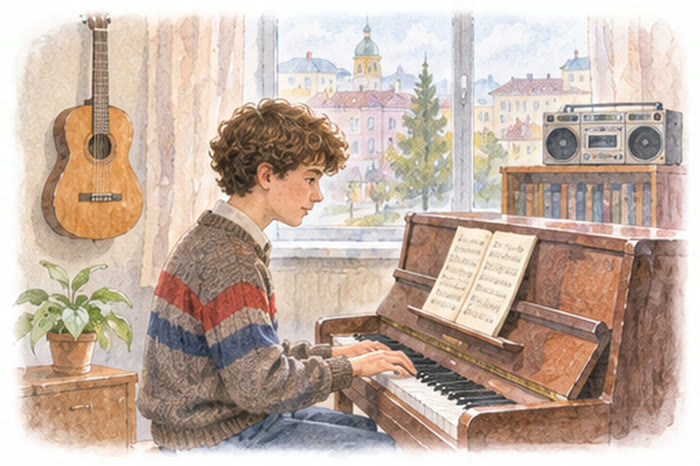

Listen to the text
Speed:

Andrii Kuzmenko is known to millions of Ukrainians by his short name: Kuzma. He was a singer, a songwriter, a TV presenter and a writer. He was born on 17 August 1968 in the town of Sambir, in the Lviv region. His mother was a music teacher, and there was always music at home. As a boy he went to a music school and learned to play the piano. His parents wanted him to have a serious job, so he studied to be a dentist. But music was stronger. In 1989 he and his friends formed a band. They called it "Skryabin", after a composer whose name they liked. At first they played electronic music, and almost nobody listened to them. Later the style changed. Kuzma started to write simple, honest songs about ordinary life: about parents, old photos, friends and love. People heard themselves in these songs. He was famous for his sense of humour. On the stage he joked with the audience as if they were old friends. He also worked on television and wrote several books. The first one, about a funny trip to Berlin in an old car, became a best-seller. Kuzma helped other people a lot, and he didn't like to talk about it. He died in a car accident on 2 February 2015. He was forty-six. In 2020 he was given the title of Hero of Ukraine. His songs are still sung at concerts, in cars and in kitchens. One of the most famous is about his mother. Many people can't listen to it without tears.
Tap any sentence to hear it again.
Сподобалось? На сайті ще більше матеріалів для вчителів!
Reader, презентації, ігри, діагностичні та контрольні роботи до підручників 1-11 класів.
Перейти на сайт materials.allaenglish.com